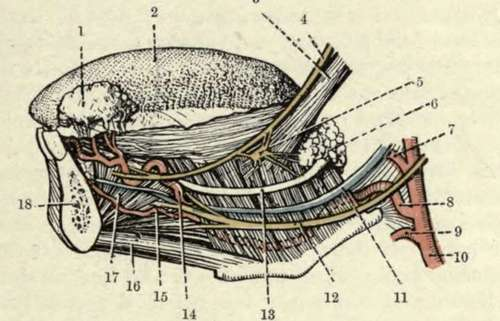

Submaxillary Region
Description
This section is from the book "Surgical Anatomy", by John A. C. MacEwen. Also available from Amazon: Surgical Anatomy.
Submaxillary Region
The submaxillary region may be divided into a median submental triangle, common to both sides, a digastric triangle, and a space between the stylohyoid and digastric which widens posteriorly. The sides of the submental triangle are formed by the anterior bellies of the digastric, the base by the hyoid bone; and the apex by the symphysis. The floor is formed by the median raphe and portions of both mylo-hyoids. One or two submental lymphatic glands are generally situated at the apex of the triangle. The sides of the digastric triangle are formed by that muscle with the stylo-hyoid, the base being the lower border of the jaw and stylo-mandibular ligament,
the apex being the intermediate tendon of the digastric. On exposing the triangle, the submaxillary gland is found to occupy most of the space, and particularly where infected by carcinoma may overlap the margin of that triangle. On turning the gland upwards, we find that the floor is formed in front by the fibres of the mylo-hyoid running downwards and forwards, while behind it, and on a deeper plane, are the fibres of the hyo-glossus, running downwards and backwards, and crossed by the hypoglossal nerve and ranine vein (the former generally above the latter), running parallel forwards, to disappear beneath the posterior border of the mylo-hyoid. Behind the hyo-glossus, and still deeper, are the fibres of the superior constrictor of the pharynx, also running downwards and backwards. The lingual artery is given off just opposite the tip of the great cornu of the hyoid, and, running on the deep surface of the hyo-glossus, pursues the same course as the vein, which is superficial to the muscle, and is accordingly taken as a guide. The artery is generally ligatured at this point in the so-called lingual triangle, formed by the ranine vein as a base, the posterior belly of the digastric posteriorly, and the posterior border of the mylo-hyoid anteriorly, the fibres of the hyo-glossus being separated in order to get at the artery. The ligature of the artery on each side generally forms a preliminary to excision of the tongue.
1. | Sublingual gland (turned up). | 10. | External carotid artery. |
2. | Dorsum of tongue. | II. | Ranine vein. |
3· | Stylo-glossus muscle. | 12. | Hypoglossal nerve. |
4· | Lingual nerve. | 13. | Wharton's duct. |
5. | Submaxillary ganglion. | 14. | Ranine artery. |
6. | Submaxillary gland (deep part). | ίδ- | Sublingual artery. |
7. | Facial artery. | ιο. | Genio-hyoid muscle. |
8. | Lingual artery. | 1I· | Genio-hyo-glossus muscle. |
ν· | Superior thyroid artery. | 18. | Mandible (in section). |
The facial artery is given off immediately above the lingual, and runs up to the angle of the jaw, and then runs parallel to and just under the ramus of the jaw to the anterior border of the masseter. It lies on the deep surface of the submaxillary gland, which separates it from its vein. The submental branch of the facial runs along the under border of the jaw to the symphysis, and supplies the submaxillary and sublingual glands. The submaxillary lymphatic glands lie on either surface of the submaxillary gland, with which they are closely connected, some being situated within the capsule of the gland or incorporated in the gland substance. The superficial ones drain the nose, cheek, and lips, while the deeper drain the salivary glands, anterior part of the tongue, and floor of the mouth. These glands are frequently the seat of tubercular and secondary carcinomatous infection. They and their ducts are also infected by inflammatory affections, a very acute form being known as Ludwig's angina, The Syoid bone possesses very considerable mobility, and hence is not frequently fractured, save by severe direct violence, as in throttling. As a rule, the great cornu is the part broken off. Where fracture occurs, the patient has much difficulty in speaking and other movements of the tongue, and especially in swallowing, owing to want of support to the middle constrictor. The bone presents many attachments: to the tongue (by the hyo-glossus and genio-hyo-glossus and hyoglossal ligament) ; to the epiglottis (by the hyo epiglottic ligament) ; to the lower jaw; base of the skull, sternum, and scapula ; larynx (by the thyro-hyoid muscles and membrane); pharynx (by the middle constrictor).
Continue to: